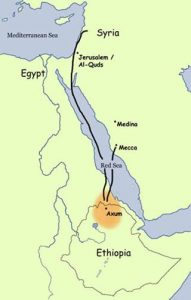

Ummul Mukminin Ramlah binti Abu Sufyan (Ummu Habibah)
Ummu Habibah adalah wanita yang menikah dengan Rasulullah dari jarak jauh. Rasulullah di Madinah, sedangkan ia berada di Afrika, di Habasyah. Bagaimana bisa? Simak kisahnya berikut ini.
Nasab
Sebagaiman kita ketahui, dalam Bahasa Arab nama yang sebelumnya terdapat kata Ummu, Abu, Ibnu, dan bintu dinamakan dengan kun-yah. Demikian juga dengan Ummu Habibah. Ini adalah kunyah bukan nama. Nama beliau adalah Ramlah binti Abu Sufyan (Shakhr) bin Harb bin Umayyah bin Abdusy Syams bin Abdu Manaf al-Umawiyah. Ia dilahirkan 25 tahun sebelum hijrah. Dan wafat pada tahun 44 H.
Ibunya adalah Shafiyah binti Abi al-Ash bin Umayyah. Ibunya merupakan bibi dari Khalifah Utsman bin Affan radhiallahu ‘anhu.
Hijrah
Ummu Habibah hijrah bersama suaminya, Ubaidullah bin Jahsy, menuju Habasyah pada hijrah yang kedua. Di sanalah ia melahirkan seorang anak yang bernama Habibah. Namun sayang, sang suami murtad dan memeluk Nasrani saat berada di bumi hijrah Habasyah. Tentu ini musibah besar bagi Ummu Habibah. Ia berada di perantauan. Negeri asing nun jauh dari sanak saudara. Kalau pulang ke kampung halaman Mekah, ia berada dalam ancaman. Ayahnya tak menerima keislamannya. Sekarang ia benar-benar sebatang kara setelah suaminya murtad. Tapi ia tetap teguh dengan keislamannya (Ibnu Sayyid an-Nas: Uyun al-Atsar, 2/389).
Peta Hijrah para sahabat Nabi. Dari Mekah ke Habasyah (Ethiyopia sekarang)
Di Habasyah, Ummu Habibah bermimpi dengan mimpi yang aneh. Kemudian mimpi ini menjadi nyata. Ia bercerita, “Dalam mimpiku kulihat suamiku Ubaidullah bin Jahsy terlihat berpenampilan sangat buruk. Aku merasa takut. Dari situ keadannya pun berubah. Pagi harinya suamiku berkata, ‘Hai Ummu Habibah, sungguh aku belum pernah melihat agama yang lebih baik dari Nasrani. Dulu, aku memeluk agama ini. Setelah itu aku memeluk agamanya Muhammad. Sekarang aku kembali lagi menjadi Nasrani’. Kukatakan padanya, ‘Demi Allah, tidak ada kebaikan untukmu’. Kukabarkan padanya tentang mimpiku. Namun ia tak peduli. Akhirnya ia menjadi pecandu khamr hingga wafat.
Kedudukan dan Keutamaan
Dari sisi nasab, Ummu Habibah adalah wanita Quraisy yang tersambung nasabnya dengan Nabi shallallahu ‘alaihi wa sallam pada Abdu Manaf. Dan tidak ada seorang pun istri beliau yang beliau nikahi melalui jarak jauh seperti Ummu Habibah (Adz-Dzahabi: Siyar A’lam an-Nubala 2/219).
Kedudukan lainnya, ia adalah putri dari tokoh besar Mekah dan pemimpinnya, Abu Sufyan bin Harb. Tentu keislamannya sangat beresiko bagi dirinya dan membuat malu ayahnya. Ia tahu memeluk Islam ibarat menyodorkan diri pada bahaya besar. Tak ragu lagi, pasti membuat sang ayah murka. Karena itulah ia menempuh perjalanan jauh dan melelahkan bersama sang suami menuju Afrika nun jauh di sana. Hijrah ke Habasyah. Beratnya hijrah semakin terasa lagi karena saat itu ia tengah mengandung anaknya, Habibah (Ibnu Saad: ath-Thabaqat al-Kubra 8/97). Inilah perjuangan di jalan Allah. Membuktikan kesungguhan dan kedalaman imannya kepada Allah Ta’ala.
Ujian untuknya tak berhenti sampai di situ. Di perantauan, sang suami murtad. Dan wafat dalam keadaan suul khatimah. Kufur memeluk Nasrani. Betapaun berat yang ia rasakan, ia tetap tegar. Ayahnya yang kufur, suaminya yang murtad, masa-masa kesendiriannya tak menggoyahkan imannnya.
Kabar Gembira
Di kesempatan lainnya, Ummu Habibah kembali bermimpi. Namun mimpi kali ini adalah mimpi indah. Ada seorang yang datang kepadanya dan berkata, “Wahai Ummul Mukminin.” Aku kaget. Dan kutakwil mimpi itu bahwasanya Rasulullah shallallahu ‘alaihi wa sallam mempersuntingku. Setelah usai masa iddahku, datang seorang utusan an-Najasyi di depan pintu. Meminta izin bertemu. Ternyata itu adalah budak perempuan miliknya yang namanya Abrahah. Dialah yang mengurusi pakaian an-Najasyi dan meminyaki dirinya. Ia masuk ke rumahku dan berkata, “Raja berpesan untukmu, ‘Sesungguhnya Rasulullah shallallahu ‘alaihi wa sallam menulis surat padaku untuk menikahkanmu dengannya’. Allah memberimu kabar gembira yang begitu baik”, sambung budak itu. Ia melanjutkan, “Raja berkata padamu tunjuk orang yang mewakilimu untuk menikahkanmu.” Ummu Habibah mengirim Khalid bin Said bin al-Ash. Ia mewakilkan dirinya dengan Khalid. Kemudian ia memberi Abrahah dua gelang perak dan dua perhiasan yang dikenakan di kaki. Dan juga cicin perak itu disematkan di jari kakinya. Hal itu sebagai bentuk syukur atas kabar gembira yang ia bawa.
Saat tiba waktu sore, an-Najasyi memerintah Ja’far bin Abu Thalib untuk mengundang kaum muslimin menghadiri resepsi pernikahan ini. An-Najasyi berkhotbah, “Segala puji bagi Allah. Sang Maha Raja, Maha Suci, Maha Pemberi keselamatan, Maha Memberi keamanan, Maha Menjaga, Maha Perkasa, dan Maha Kuat. Aku bersaksi tidak ada sesembahan yang benar kecuali Allah. Dan Muhammad adalah hamba dan utusan-Nya. Dialah yang dikabarkan oleh Isa bin Maryam. Amma ba’du. Sesungguhnya Rasulullah shallallahu ‘alaihi wa sallam menulis surat kepadaku agar menikahkannya dengan Ummu Habibah binti Abu Sufyan. Aku pun memenuhi seruan Rasulullah shallallahu ‘alaihi wa sallam. Dan aku memberikan sebanyak 400 Dinar. Kemudian aku serahkan Dinar-Dinar itu kepada sekelompok orang.”
Khalid bin Saad gantian berbicara, “Segala puji bagi Allah. Aku memuji-Nya, meminta kepada-Nya, dan memohon pertolongan-Nya. Aku bersaksi tidak sesembahan yang benar kecuali Allah, tidak ada sekutu bagi-Nya. Dan aku bersaksi bahwa Muhammad adalah hamba dan utusan-Nya. Dia mengutusnya dengan petunjuk dan agama yang benar. Agar agama tersebut menang dibanding agama selainnya. Walaupun hal itu membuat orang-orang musyrik benci. Amma ba’du. Aku telah memenuhi seruan Rasulullah shallallahu ‘alaihi wa sallam. Dan kunikahkan beliau dengan Ummu Habibah binti Abu Sufyan. Semoga keberkahan dari Allah untuk Rasulullah shallallahu ‘alaihi wa salam.”
Sejumlah Dinar tadi, diserahkan kepada Khalid bin Saad. Lalu ia mendekapnya. Merasa acara walimah telah usai, para tamu mulai beranjak. Khalid berkata, “Duduklah. Sesungguhnya di antara sunnah para nabi apabila mereka menikah, mereka memberi hidangan makanan”. Ia pun mengundang mereka makan. Hidangan disantap. Setelah itu baru mereka pulang.
Ummu Habibah berkata, “Saat mas kawin tadi sampai di tanganku, kuserahkan ia kepada Abrahah yang telah memberi kabar gembira padaku. Kukatakan padanya, ‘Aku pernah memberimu apa yang telah aku berikan waktu itu. Padahal saat itu, aku tak memiliki sepeser harta pun. Ini ada lima puluh sekiaan (sejumlah harta). Ambil dan gunakanlah’. Ia menolak harta itu. Setiap aku memberinya, ia selalu mengembalikannya padaku. Ia berkata, ‘Raja berpesan padaku agar tak menerima sedikit pun darimu. Dan akulah orang yang mengurusi pakaiannya dan wewangiannya. Sungguh aku telah mengikuti agama Muhammad Rasulullah shallallahu ‘alaihi wa sallam. Dan aku telah berserah diri (berislam) kepada Allah Subhanahu wa Ta’ala. Raja menitahkan kepada istri-istrinya agar mengirimimu wewangian yang mereka punya’.
Ummu Habibah berkata, “Esoknya aku kedatangan gaharu, waros, bibit parfum, zabbad (sejenis wewangian) yang banyak. Kuperuntukkan semua itu kepada Rasulullah. Beliau melihatnya dan tidak mengingkarinya.”
Abrahah berkata, “Hajatku padamu hanyalah engkau menyampaikan salam dariku kepada Rasulullah shallallahu ‘alaihi wa sallam. Sampaikan padanya bahwa aku telah mengikuti agamanya.” Kata Ummu Habibah, Abrahah senantiasa berbuat baik dan melayaninya. Setiap ia menjumpai Ummu Habibah, ia selalu mengingatkan, “Jangan lupa kau sampaikan keinginanku.”
Ummu Habibah berkata, “Saat aku berjumpa dengan Rasulullah shallallahu ‘alaihi wa sallam, kuceritakan bagaimana proses lamaran dan segala perbuatan baik Abrahah padaku. Beliau tersenyum. Dan aku sampaikan salam darinya pada beliau. Nabi menjawab,
“Untuknya juga keselamatan, rahmat, dan berkah dari Allah.” (Ibnu Saad: ath-Thabaqat al-Kubra, 8/97-98).
Hikmah Pernikahan
Nabi shallallahu ‘alaihi wa sallam menikahi Ummu Habibah pada tahun ke-7 H. Beliau menikahinya karena memuliakannya dan meneguhkan agamanya. Kita tahu bagaimana perjalanan hidup Ummu Habibah. Cobaan berat dari ayah, suami, dan keadaan telah menempanya. Tidak sedikit seorang wanita yang teguh memegang kebenaran jatuh lunglai tatkala suaminya yang semula seperjuangan malah balik ke belakang. Namun tidak dengan Ummu Habibah. Ia berhijrah bersama anaknya. Merasa sedih ditinggal sang suami dalam situasi ia sangat membutuhkannya. Orang tua yang semestinya menjadi tempat mengadu -setelah Allah- pun tidak dapat ia andalkan. Ia tinggal sendiri di sebuah tempat bermi-mil jaraknya dari kampung halaman. Namun ia tetap bersabar dengan keadaannya. Tetap teguh memegang agamanya. Kemudian Allah hibur dia dengan menikahkannya dengan Rasul-Nya shallallahu ‘alaihi wa sallam. Dan menjadikannya ibu orang-orang yang beriman.
Perhatikanlah! Bagaimana perhatian Nabi shallallahu ‘alaihi wa sallam terhadap kaum muslimin. Meskipun mereka berada di negeri yang jauh di Habasyah, beliau tetap mengikuti perkembangan berita mereka. Bahkan kabar perkembangan per individu mereka. Di antaranya tentang Ummu Habibah. Cobaan bergilir datang padanya. Ia tetap teguh dengan iman dan agamanya. Ia bersabar. Dan Allah membalas kesabarannya dengan menikahkannya dengan manusia terbaik yang pernah ada.
Cintanya Kepada Nabi
Diriwayatkan bahwa Abu Sufyan datang ke Madinah. Kedatangannya dalam rangka melobi Rasulullah shallallahu ‘alaihi wa sallam untuk berdamai. Setelah sebelumnya mereka sendiri, kaum Quraisy, membatalkan Perjanjian Hudaibiyah. Setelah Rasulullah menolak permintaannya, Abu Sufyan mencoba jalan lainnya. Yaitu melobi Rasulullah melalui putrinya yang merupakan istri Rasulullah, Ummu Habibah radhiallahu ‘anha.
Saat Abu Sufyan hendak duduk di kasur Rasulullah shallallahu ‘alaihi wa sallam, Ummu Habibah bersegera melipatnya. Abu Sufyan berkata, “Putriku, (aku tak mengerti) apakah kasur ini tidak layak bagiku (karena kau ingin yang lebih baik). Ataukah aku yang tak pantas duduk di kasur itu?” Ummu Habibah mengatakan, “Ini adalah kasurnya Rasulullah shallallahu ‘alaihi wa sallam. Sementara Anda adalah seorang musyrik yang najis. Aku tidak suka ayah duduk di kasurnya Rasulullah shallallahu ‘alaihi wa sallam.” Abu Sufyan berkata, “Putriku, kau menjadi jahat setelah berpisah denganku.” “(Tidak) bahkan Allah menunjukiku kepada Islam. Dan Anda -wahai ayah- adalah tokoh dan pembesar Quraisy, bagaimana bisa engkau terluput dari memeluk Islam. -Sebagai orang besar- Anda malah menyembah batu yang tidak mendengar juga melihat?!” Abu Sufyan pun pergi meninggalkan putrinya (ash-Shalihi asy-Syami: Subul al-Huda wa ar-Rasyad, 5/206).
Kecintaan Ummu Habibah radhiallahu ‘anha kepada Rasulullah shallallahu ‘alaihi wa sallam juga tergambar dalam riwayat berikut ini:
“Wahai Rasulullah, nikahilah saudara perempuanku, anak perempuan Abu Sufyan.” Nabi shallallahu ‘alaihi wa sallam menjawab, “Apakah engkau senang akan hal itu?” Ummu Habibah menjawab, “Benar, aku tidak hanya ingin menjadi istrimu, dan aku ingin saudara perempuanku bergabung denganku dalam memperoleh kebaikan”. Nabi shallallahu ‘alaihi wa sallam bersabda, “Saudara perempuanmu itu tidak halal bagiku. Ummu Habibah berkata, “Kami mendengar berita bahwa engkau ingin menikahi anak perempuan Abu Salamah?” Beliau bersabda, “Anak perempuan Abu Salamah?” Ummu Habiibah menjawab, “Ya.” Beliau bersabda, “Seandainya ia bukan anak tiriku yang ada dalam asuhanku, dia tetap tidak halal aku nikahi, karena ia adalah anak perempuan saudara laki-lakiku dari hubungan persusuan, yaitu aku dan Abu Salamah sama-sama pernah disusui oleh Tsuwaibah (Mawla Abu Lahab). Oleh karena itu, janganlah engkau tawarkan anak perempuanmu atau saudara perempuanmu kepadaku.” (HR. Bukhari, no. 5101 dan Muslim, no. 1449).
“Mudah-mudahan Allah menimbulkan kasih sayang antaramu dengan orang-orang yang kamu musuhi di antara mereka. Dan Allah adalah Maha Kuasa. Dan Allah Maha Pengampun lagi Maha Penyayang.” [Quran Al-Mumtahanah: 7].
Ayat ini turun berkaitan dengan Abu Sufyan. Rasulullah menikahi putrinya, Ummu Habibah radhiallahu ‘anha. Kemudian menjadi tali penyambung jauhnya hubungan Rasulullah shallallahu ‘alaihi wa sallam dengan Abu Sufyan (Ibnu Katsir: Tafsir al-Quran al-Azhim, 8/89).
Sepeninggal Nabi
Setelah Rasulullah shallallahu ‘alaihi wa sallam wafat, Ummu Habibah tetaplah orang yang sama. Ia tetap wanita yang dulu, yang teguh dalam memegang kebenaran. Ketika datang berita kematian ayahnya, ia meminta wangi-wangian. (Setelah didatangkan), ia pun mengusapkannya pada kedua hastanya seraya berkata, “Sebenarnya aku tidak membutuhkan wangi-wangian ini seandainya aku tidak mendengar Nabi shallallahu ‘alaihi wa sallam bersabda,
“Tidak halal bagi seorang wanita yang beriman kepada Allah dan hari akhir berkabung pada seorang mayit lebih dari tiga hari, kecuali pada suaminya yaitu selama empat bulan sepuluh hari.” (HR. Bukhari, no. 5335 dan Muslim, no. 1491)
Selama 33 tahun melanjutkan kehidupannya sepeninggal Nabi shallallahu ‘alaihi wa sallam, Ummu Habibah banyak melewati peristiwa-peristiwa besar bersama kaum muslimin. Saat terjadi petaka di zaman Utsman, para pemberontak kian mengganas. Seseorang berkata, “Seandainya kalian menemui salah seorang Ummul Mukminin. Mudah-mudahan mereka berhenti dari Utsman. Mereka menemui Ummu Habibah binti Abu Sufyan. Aku (periwayat yaitu Hasan al-Bashri) melihat ia berada di sekedup di atas Bagal (peranakan kudan dengan keledai) putihnya. Orang-orang membawanya ke kediaman Utsman. Namun para pemberontak memalingkan arah tunggangannya. Mereka menolaknya. (Adz-Dzahabi: Siyar A’lam an-Nubala, 4/569).
Ummu Habibah radhiallahu ‘anha juga senantiasa menjaga hubungan baiknya dengan saudari-saudarinya sesama istri Nabi. Dari ‘Auf bin Al-Harits, ia mendengar Aisyah radhiyallahu ‘anha berkata, “Ummu Habibah pernah memanggilku ketika ia akan meninggal dunia. Ia berkata, ‘Di antara kita pasti pernah ada masalah. Semoga Allah mengampuni aku dan engkau dari apa saja yang terjadi di antara kita.” Aisyah pun berkata, “Moga Allah memaafkanmu atas seluruh kesalahanmu dan menghalalkan itu semua.” Ummu Habibah lantas berkata, “Engkau telah membahagiakanku, semoga Allah juga memberikan kebahagiaan untukmu.” Ummu Habibah juga menyatakan kepada Ummu Salamah seperti itu pula. (Ibnu Saad: ath-Thabaqat al-Kubra, 8/100).
Wafatnya
Ummu Habibah wafat di Kota Madinah tahun 44 H. Saat itu beliau berusia 86 tahun. Ia wa fat di masa pemerintahan saudaranya, Muawiyah bin Abu Sufyan. Semoga Allah meridhai mereka semua (Ibnu Hajar: al-Ishabah fi Tamyiz ash-Shahabah, 7/653).